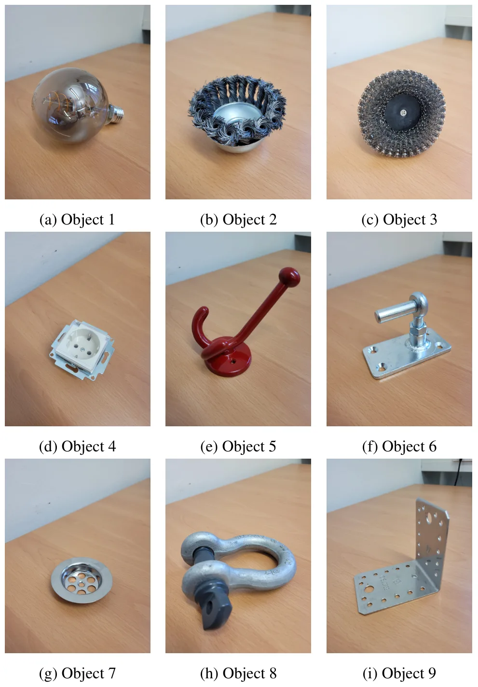
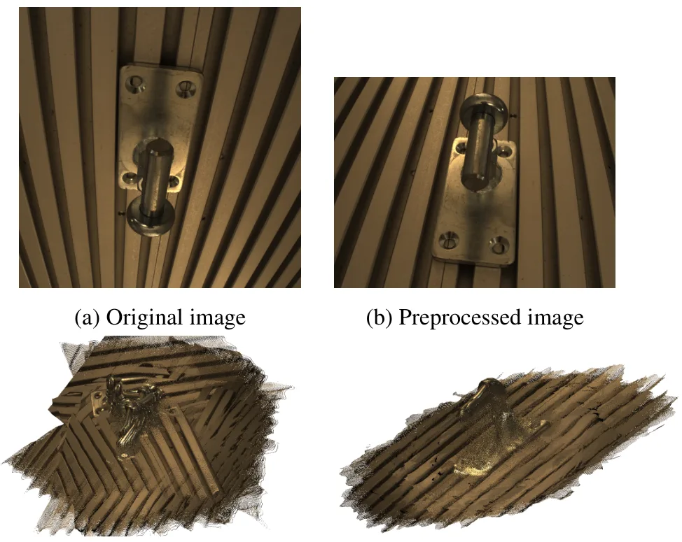
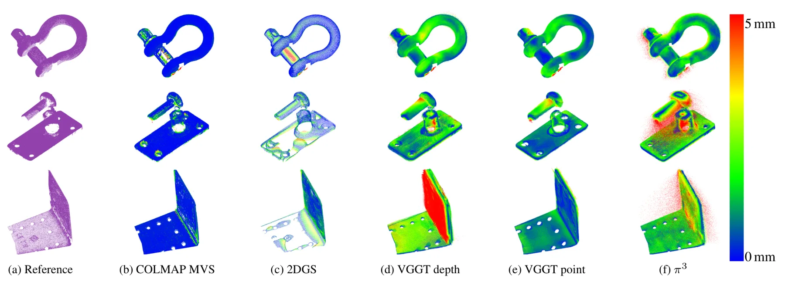
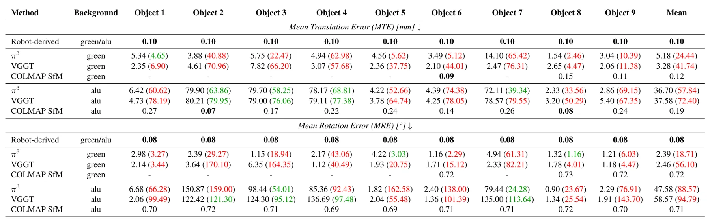
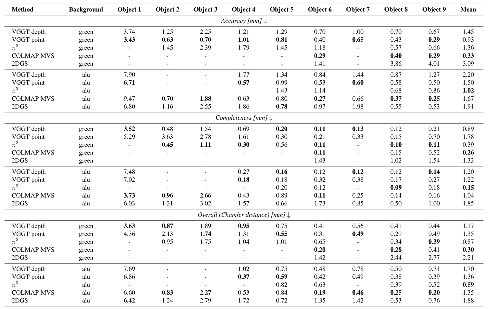
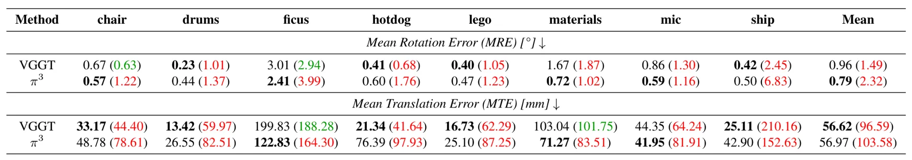

MVM-IOD：用于评估三维重建方法的工业物体中心基准数据集MVM-IOD: An Industrial Object-Centric Benchmark Dataset for the Evaluation of 3D Reconstruction Methods
对工业三维重建、相机位姿估计和 feed-forward 重建模型评测很有价值；与在线 SLAM/GNSS 关系间接，但可作为物体级重建 benchmark。
一句话工作总结
MVM-IOD 用机器人半球采集工业物体，提供参考位姿和点云，用于比较 SfM/MVS、VGGT、π3 与 2DGS 等重建方法。
摘要
工业应用中的三维物体重建和相机位姿估计要求高精度且常受计算时间限制，工业物体复杂形状进一步增加难度。MVM-IOD 提供更贴近真实工业测量的数据：相机安装在工业机器人末端，沿物体周围半球轨迹系统采集图像。数据集包含 9 个典型工业物体、2 种背景共 18 个场景，提供参考相机位姿、参考三维点云和 RGB 图像，可评估基于图像的三维重建、相机位姿估计和新视角合成方法。作者基于 MVM-IOD 评估 SfM、MVS、VGGT、π3、2D Gaussian Splatting 等方法，发现工业采集会产生 feed-forward 方法的分布外图像，导致点云和位姿质量下降；简单预处理能缓解但工业场景使用仍需谨慎。
3D object reconstruction, and camera pose estimation in industrial applications are challenging tasks, as errors are costly while the computation time is often limited. The complexity of typical industrial objects further complicates these tasks. Most of the existing datasets in this context do not depict realistic industrial scenarios. Therefore, we introduce the Machine Vision Metrology Industrial Object Dataset (MVM-IOD). Images of typical industrial objects are captured systematically, by moving a camera, mounted at the end effector of an industrial robot arm, on a hemisphere around the objects. MVM-IOD contains reference camera poses and reference 3D point clouds, the acquired RGB images of 9 objects and 2 background choices resulting in 18 scenes, which allows evaluation of all image based methods that compute a 3D reconstruction, camera poses, or novel views of a scene. Based on MVM-IOD, we extensively evaluate current SOTA 3D reconstruction and camera pose estimation methods, such as Structure from Motion, Multi-View Stereo, recent feed forward methods (Visual Geometry Grounded Transformer, π3), and 2D Gaussian Splatting and report our findings as a baseline for future research. The experiments show that capture setups like ours generate out-of distribution images for feed forward methods, leading to suboptimal point clouds and camera poses. However, these out-of-distribution images can be shifted closer to the training distribution by applying simple preprocessing steps. Consequently, in certain industrial applications, feed forward methods should be used with caution.
中文解读摘录
- 链接：abs / PDF；作者：Robert Langendörfer, Markus Hillemann, Markus Ulrich；类别：cs.CV；采集 score=12。
- 核心思路：为工业物体三维重建、相机位姿估计和 novel view synthesis 提供更贴近真实工业测量场景的数据集。
- 方法要点：相机安装在工业机器人末端，沿半球轨迹系统采集 9 个物体、2 种背景共 18 个场景；提供 reference camera poses、reference 3D point clouds 和 RGB 图像；对 SfM、MVS、VGGT、π3、2D Gaussian Splatting 等方法做 baseline。
- 关注点：对物体级重建、SfM/MVS 与 feed-forward 方法对比很有价值；作者指出工业采集会让 feed-forward 方法遇到 out-of-distribution 图像，简单预处理可缓解但实际应用需谨慎。
图表/页面预览
{kind=link}

{kind=link}

{kind=link}

{kind=link}

{kind=link}

{kind=link}
